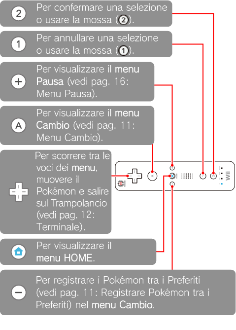
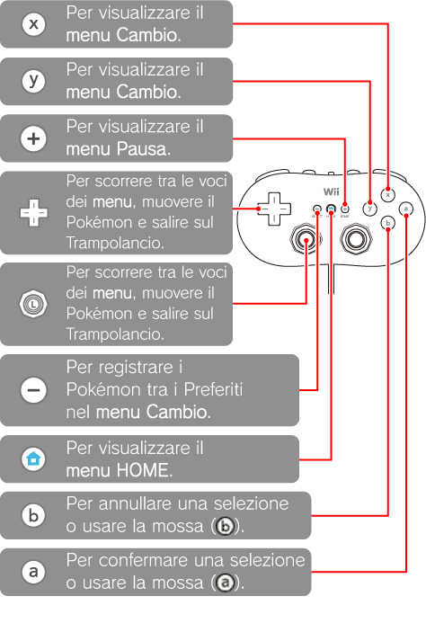
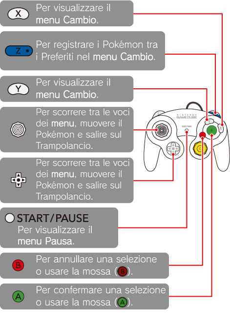

7 |
Comandi |
 |
|
Si può giocare da uno a quattro giocatori. È possibile usare il telecomando Wii, il Nunchuk, il controller tradizionale e anche il controller per Nintendo GameCube. Tuttavia, in questo manuale si fa riferimento ai comandi di gioco con il telecomando Wii.
Nota: se utilizzi un controller diverso dal telecomando Wii, consulta il paragrafo “Giocare con un controller diverso dal telecomando Wii” a pag. 18. Ricorda che comunque nella modalità singolo giocatore non puoi utilizzare il Nunchuk.
Telecomando Wii Il telecomando Wii va tenuto alle estremità in posizione orizzontale.  Altri controller Se utilizzi un controller tradizionale o un Nunchuk, collegali al telecomando Wii. Se, invece, stai usando un controller per Nintendo GameCube devi collegarlo direttamente alla console. Puoi quindi accedere al menu PIÙ GIOCATORI (vedi pag. 18: Come avviare un Gioco di Squadra).
In Pokémon Rumble puoi giocare in due anche se disponi di un solo telecomando Wii. Il giocatore 1 userà il telecomando Wii e il giocatore 2 userà il Nunchuk, o il controller tradizionale, che vi è stato collegato.
Attenzione: durante il gioco non tirare troppo il cavo che collega il telecomando Wii e il Nunchuk; si potrebbe staccare e provocare incidenti, ferite o danni alla casa.
Nunchuk Nella modalità singolo giocatore non si può usare il Nunchuk. Quando giochi con altri giocatori, collegalo al telecomando Wii, ma ricorda che con il Nunchuk non si può accedere alle funzioni del menu Pausa e registrare Pokémon tra i Preferiti. Controller tradizionale  Controller per Nintendo GameCube  |
 |
 |
 |